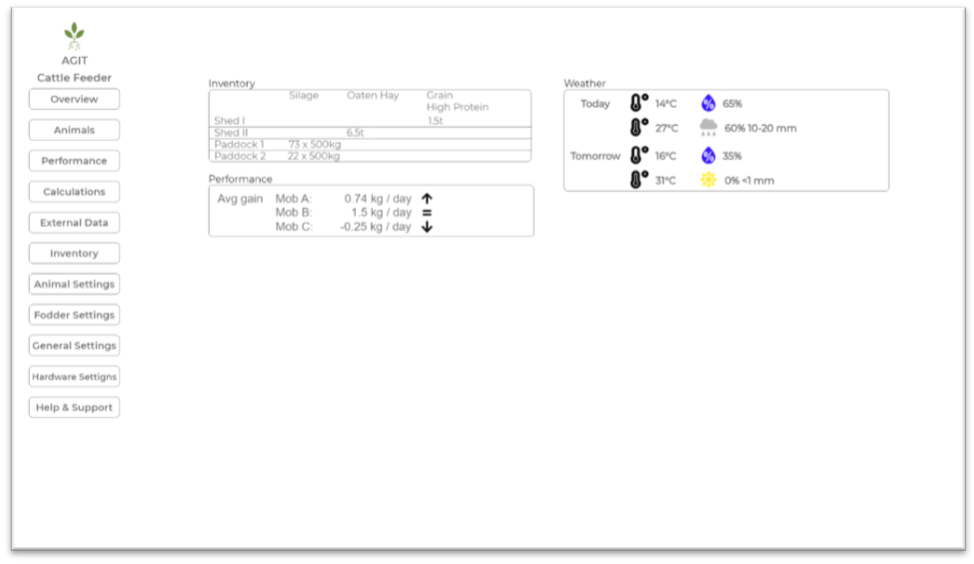
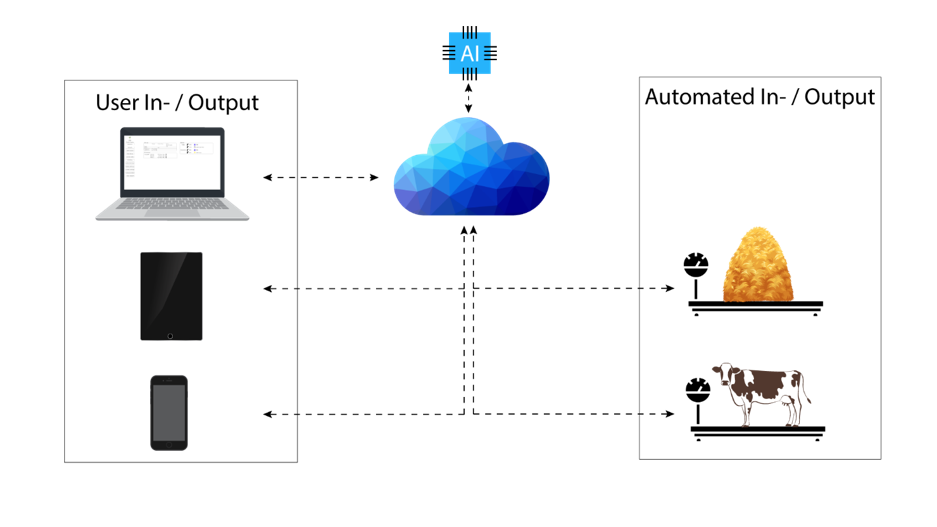

At AGIT we will use modern information technology to help farmers to improve production, efficiency and profits while reducing the strain on the environment. Our bigger picture is to develop and produce a network of sensors, actuators and user interfaces, connected to a cloud-based software (“the brain”), to address all the issues given above. Having said that, our focus for this project will lie on a feed demand calculator for cattle, accessible via web browsers, smartphones and user interface displays.
There are different outcomes: reduction of administration because of networked devices; the reduction of feed cost because of intelligent calculations. For the cattle feeder: Predictable cost of feeding for a given period of time and Cost savings as calculator will suggest cheapest and yet healthy solution.
Reduction of “food waste” and therefore reduction of cost – farmers only need to feed as much as necessary and the cost/production ratio will improve (farmers still feed straw, this might be a good filler for animals but it will hardly contribute to the growth of the animal. The difference in cost for straw compared to hay, however, is so small, it is simply not worth buying any straw).
Reduction of office work – no double handling of data: the project works in a cloud; all data is synchronized immediately; no sheet needs to be printed; hardware implementation like the scale will show what to feed for each mob and as the farmer confirms what actually was fed, it’ll update the data in the cloud.
Australia is one of the largest beef exporters in the world (GLOBAL SNAPSHOT l BEEF, 2019) and large parts of Australia are in a drought. Not all livestock can be saved. To revive an operation after a catastrophic weather event like the current drought, a core of the stock needs to be saved and fed through the event. Our feed calculator will help with that.
The cattle feeder, however, is also useful under normal conditions. It will provide the farmer with detailed, in-depth knowledge about feeding and weight gain and therefore reduce the time the farmer would spend on researching these aspects and performing tedious calculations. The points given above will improve production and reduce cost.
The project is important because of the size of the cattle industry in Australia, the benefits that it could provide to farmers who often face tough conditions and the environmental benefits that could be gained. It helps farmers by assisting with calculations that determine the efficient and economical delivery of food to animals, when they need it - ultimately preventing under/over feeding.
There is on one side, the decentralized hardware / IoT component which allows us to save resources and time. On the other hand, we are aiming to use an AI which is going to learn and improve as the project with its users grows. Additionally, our software will be cloud-based – this trend has been seen for quite a while now.
Working on this project would display to employers an ability to research and plan, as well as collaborate with team members to deliver a unique concept that has not been developed elsewhere. It would show an understanding of the software and hardware tools required to bring the concept to life. It will also show that the team is environmentally conscious.
Our project is a solution which includes knowledge, a platform to store data and an intelligence which takes many factors into consideration, without the need for the user to add a huge amount of data himself or to do tedious research.
Tools like “NSW Drought Feeding Calculator” are available and they do assist to determine the required feed for cattle. However, there is hardly any room for collecting data, adding grain mixes, setting target weight gains etc. Furthermore, these tools don’t know the circumstances, the weather or the different feeds available. We are focusing on giving individual advice rather than a broad overview about what could be done and in what areas one should do something different.
AGIT has two primary aims. The first is to 'help farmers farm more efficiently’ and the second is to ‘reduce administration for farmers’. The app will assist farmers to allocate feed in a way that is economical and most beneficial to the animal and will remove the need for manually recording the data. Currently there is no technology-based solution that can be employed by farmers to more accurately determine the necessary ingredients and total amounts of feed required by the animals they maintain. This app will save time and money for the farmer, whilst improving the health of his or her animals.
Create teams to build the software and hardwareThis will bring the app to life.
Find farmers who are willing to trial the technologyThis will help determine whether the app is successful or not as well as assist in collecting the initial data sets for ongoing health of animals.
Research nutritional benefit of different types of feedThis will ensure that the information being fed to farmers is accurate.
Research seasonal feeding habits of animalsThis will ensure that feed estimates are more accurate.
Create teams to market the productThis will make possible the ongoing production of the technology.
Main Aims:
The software can be used at any point, however, it will be mostly used in winter as summer grasses are dormant at that time. The system will be most valuable in droughts, like the current one we are in now.
Farmers often use straw to feed animals. There is one, and only one benefit of this which is it fills the animal at low cost. The price of straw however is too high, especially if one adds transport. Buying high quality hay and reduce the amount fed to the animals will often end up cheaper in the long run. Farmers also often buy random hay. Feed tests are a crucial part of feeding as animals require certain amounts of energy and protein, depending on the weight gain aims. Energy and protein in hay varies extremely.
For example, animal needs 60 MJ / day. It’s a growing animal, it should get at least 15% protein. 1kg of hay at 90% dry matter delivers 9 MJ / kg and it actually contains 15% protein. In this case the energy per kg fed equally 0.9 * 9 MJ = 8.1 MJ/kg to match the required energy we need to feed 7.4kg of hay to that particular animal. If they buy a kilo @$0.7 they pay $5.18 / day. In contrast, they now buy cheaper food at $0.6 / kg, but it only contains 85% dry matter and only 7 MJ / kg, it will cost $6.05 / day. The feed may have been cheaper to purchase but the total feeding cost becomes more expensive as a result.
The AGIT Cattle Feeder will be a cloud based, hardware supported tool for beef producers to calculate, monitor and adjust feed quantities accordingly to the desired and set weight gains for cattle at the lowest possible cost, while still considering the health requirements of the animals. The system will not only take into consideration the quality and nutritional values of the fodder, but it will also adjust recommendations for different categories of animals i.e. bulls, pregnant or lactating cows, calves and animals at a certain growth stages, as all their nutritional demands vary greatly. It will give information about supplements needed to keep the animals healthy and give advice on good practices for generally healthy herds. The browser- and mobile app-based software will furthermore keep records of data for the farmer from the history and combine that data with data from all users of the software to adjust future suggestions for all clients. The backend of the software is going to have an AI-instance to combine collected data and elaborate the best possible feed formula to achieve the targets given by the client.
There are endless possible scenarios in the real world as how to achieve certain goals and these scenarios are not only governed by the type of animal and the fodder it is eating. Environmental influences like the air- and soil temperature, quality of water and the amount of rain as well as trace elements in the soil are affecting the performance substantially. To be able to give most accurate feeding plans and to improve our general accuracy, the farmer will optionally be able to integrate hardware to the system, which then feeds information into our database and to the AI. Hardware extensions could include, but are not limited to, weather stations and soil measurement tools, or - just for the convenience, accuracy, and as a time-saver – automatic feed scales which will show the fodder types and quantities needed for a certain mob on the display and confirm automatically to the cloud that this mob received their ration on that day.
The main target of the project is to provide a tool to farmers in extreme environmental conditions like droughts, floods or in fire-affected areas to keep their performance up - at reasonable cost. However, the tool can also be used under normal circumstances to reduce cost and increase productivity and profitability.
The project idea arose when one of our team members, who had had very little experience in farming, was faced with severe drought conditions in New South Wales while he managed a cattle stud with 80 head. Research and calculations for feed quantities and qualities were vital to keep the loss at a minimum while still performing reasonably well. After talking to many close neighbours, and then farmers from all over Australia, it turned out that many of them weren’t calculating the required quantities (also completely without knowledge about the nutritional value of their fodder) but instead they were just feeding “as they went”. These farmers would monitor the conditions of the animals and increase or decrease amounts of feed as they over- or underperformed. Some breeds, however, can lose quite a bit of weight without obvious visual signs. To regain 50kg or 100kg of weight, much more feed is needed than to maintain the current weight, which ends up to be very expensive for the farmer. Another incentive to create a product like ours was to centralise information, make them recallable, trackable and conveniently accessible. There are, of course, lots of information available, even websites which do a similar job. But these websites are mostly not very detailed, and the entered data is also not being saved and therefore not recallable. Our team member also had to spend a lot of time to go through all this information and to create his own little central library to keep information handy at any time.
The initial aim of the project was, besides the feed calculator, the integration of other tools for completely different areas of agriculture which could include for instance fertilizer-calculators and hardware controller for outdated equipment. One hardware example for that could be a controller and monitor for old seeders: the seed- and fertilizer compartments are often not equipped with any monitoring tools, sometimes not even with a window on the side to see how much product is still left. As a result, the operator of the machine physically has to check the level of the product every so often. Furthermore, as these compartments are often not subdivided, the seed and fertiliser might shift to one side of the compartment (if one sows at an angle, for instance). Some optical sensors and easily installed physical dividers, in combination with a little display, can provide real time information to the farmer about the levels of his products in the seeder. To get the project started, however, we decided to drop these areas for now.
Research and a good team effort has brought us to a point at which we were able to determine a good set of tools required to plan the prototyping of our project. We have got a clear idea of what we want to achieve and what resources are necessary.
Although there is still a lot of work to do and we have not decided on any specific designs and UIs, a wireframe for the online app can be found here.
To achieve our target to provide usable and accurate weight gain forecasts, we will need to investigate the following areas:
The foundation of the project is a cloud-based backend; therefore, backend technologies are most important for us. Suitable technologies could include Python, Ruby, Java, JavaScript as well as a database system.
The user interface, however, is as important to make the project as attractive and user friendly as possible. To realise a good frontend, HTML, CSS, and JavaScript are compulsory. Other script libraries like jQuery will be used, too.
To cover the mobile side of the project, applications for Android and iOS need to be developed and securely connected to our backend. Java & Swift are the two languages needed for that.
Even though this is also a part of the software development and some parts of the general knowledge play into this field, AI / ML requires a point on its own.
A thorough understanding is absolutely critical to ensure accurate forecasts created by our software. Our plan is to create an algorithm which at first learns supervised: we will feed the data, label it and tell the computer how to use that data. As soon as the machine is able to use that data and predicts reasonable feeding forecasts, we will switch over to reinforcement learning. When the user then asks for a specific weight gain, the machine will give some feeding recommendations. As the user inputs new weights after some time, the machine will take that data and compare it with the target given before. If these two values deviate, the Machine Learning instance will learn and adjust the recommendations in the future accordingly.
We believe that it makes sense to use services from companies like Amazon (for instance Amazon’s SageMaker) to create and deploy our ML models in the most convenient way, even in the development phase although were considering to use single board computers like the NVIDIA Jetson Nano for the prototyping.
To provide a convenient, all-in-one solution and to get the most out of our system, the hardware development of cattle- and feed scales, for instance, is very important to us. These components can potentially be developed with a good understanding of physics in combination with the software development.
For the prototyping of the hardware components, Raspberry PIs will be used. They will be equipped with small touch displays to read, enter or confirm data.
All of these are from equal importance to realise our project. The following schematics show how the system will operate:
Although we know now what is required to realise the project, we would still like to describe how the system will work in detail and how it benefits our customers.
The first step to make the system work is to develop the soft- and hardware. A good foundation will be fed into our AI and the algorithm will be developed, too. As soon as the development & test phases are over, the customer will be able to buy our product.
The user then enters his cattle and their actual weights. He should also add nutritional values of the fodder he uses. If he does not enter that data, we will use average values. The most convenient way for the initial setup will be in the browser. All of that data will be stored in the cloud and the cloud will be connected to our AI. Now it is the time to create a feeding plan: the user selects the class of animal, age, available fodder, some weather information and a target weight. All of that information will be passed through to the AI which then calculates and returns a feeding formula which considers the cost of the fodder (entered by the farmer) and the nutritional values. The farmer feeds accordingly for some time, weighs the cattle again and enters the new weights into the system. If the actuals and targets deviate, the AI will learn (reinforcement learning as the user inputs new data) and adjust accordingly for the next calculation.
Automatic In- and Output systems will eradicate the need of paper and manual input of information: The created feed plan will automatically be sent via network to the feed scale and, at the time of the feeding, show the farmer automatically what fodder needs to go where. The farmer can confirm the quantities fed to the animals and that data will be returned to the cloud again. The cattle scale works in a similar way: as the farmer weighs the animal, the scale will show the last weight, the expected new weight and, after the actual measurement, save the new weight in the cloud automatically. As soon as the new weight is taken, it will also show the deviation of the set- and actual gain and automatically adjust the calculations and recommendations given before. The adjusted recommendation will then be sent to the feed scale and for the next feeding be ready on the screen of the scale.
The results are less paperwork, less work in front of the computer, precise feeding, less feed wastage and therefore more profit while reducing unnecessary time in front of the computer.
AGIT have decided to give each team member within the group a specific role as each member has interests and expertise in different areas. We feel that giving roles to each person will increase ownership of tasks in the project as well as giving members the ability to focus on their strengths. The roles are as follows:
Kristen has been given the role as project manager because before moving to AGIT he was a project manager for a large-scale security company. We believe that Kristen’s experience in managing projects will be invaluable to making sure everyone within the group is meeting internal deadlines. Therefore, we believe Kristen will be an integral part of the project being completed on time.
Angelo has been given the role of lead developer due to being the brainchild of the feed calculator. After moving to Australia from Germany Angelo has been working on a cattle farm and has found that farmers could be saving money by feeding animals more efficiently. He believes that his idea of a feed calculator app using industry data to measure animals’ dietary needs and dispensing the right amount of feed, could be the answer to saving farmers lost capital outlay in overfeeding.
Tee Ming has been given the position of software engineer due to his problem-solving skills as shown by volunteering at his local church fixing audio systems. He has shown a keen interest in software writing and has been quick in acquiring this new skill. He has developed a good understanding of software language used in both JavaScript and Python and is the perfect person to take the role of software engineer within AGIT.
Benjamin has been given the role of the interface designer due to his exceptional creativity and conceptual thinking. We feel he is the best person within this group to make a user friendly and useful interface for our app, as we believe having someone like Ben only working on the apps interface will give us the most functional and simple interface.
Kristian has a keen interest in IT and is very passionate about customer satisfaction once the product has left AGIT and is being used in the field by farmers. He has excellent communication skills along with troubleshooting experience consequently he has been given the role of post sales customer support. We think it’s important to have post sales customer support as our customers will become our biggest marketers and making sure there happy with the product will help us in the future as farming is a close-knit community.
Nathan has a broad knowledge of IT systems as well as being a people person as evidenced by his work in consulting. Therefore, AGIT has chosen He as our marketing manager as we feel that he is the best person to sell our product due to the combination of IT knowledge and his understanding of human behaviour. We think it’s important to have a marketing manager because without customers we do not have a business, and it is Important we make back the capital back spent on research and development.
AGIT believes with the combinations of roles above we will have the best chance of making a successful and sustainable product for the agricultural market.
Due to only having 5 weeks to work on this project, AGIT have had to set a limit on what we are going to be able to produce in that time as we will not have time to develop the app and hardware needed for the final product. We have decided that we are going to wire frame both concepts of the project (the app and the feeder hardware) along with an in-depth report on the idea and technology used. We feel this will give the best idea to the market of how the product is going to work along with the features and dimensions of hardware. We believe this is enough to show our concept in-depth without crossing the line of it being unattainable.
To realise the project, a text editor is necessary. We would use Microsoft Visual Studio Code (current version: 1.38.1, MIT license: permit for commercial use, modification, distribution and private use). Sublime Text could be an alternative, however, it requires a paid license. Only Angelo has got prior experience with Microsoft Visual Studio Code as he was writing websites and python code before with it.
The hardware realisation could be prototyped with Raspberry PI 3 in combination with displays and load cells for the scales. The final PCB would have to be produced for us. Prior experience is limited to Angelo. He was using the PI to realise smaller applications like a weather station. The code used for that realisation was Python.
Amazon’s SageMaker, besides all the coding languages, another very important technology for us to use. No member of the team has got any experience with that.
There will be various tests of the project, split in different areas:

The user interface, which will have no logic for now, will be given to a number of people from different backgrounds and ages accompanied test cases. The case will have to be completed in a specific order and while this happens, the mouse-movements and clicks are recorded by a tool like Crazyegg (Crazyegg.com, 2019). The results of the tests can be three different main scenarios:
The majority of the users
If one task fits in category 1, no UI improvement for that task is required. If another task could not be done (by a number of people) at all, it is likely that the user interface is not efficient for that area and needs to be improved.
This will be tested by us with the following test type:
A list of specific (valid and invalid) inputs and their expected outputs will be created and then executed. The expected and actual outputs are then compared and defects, if any, will be fixed and the test will be run again.
will be tested by us in a test lab. For instance, the load bars of a scale will be put under load and the expected current, according to the specific load, will be compared to the actual current. The output of the scale to the input of the hardware interface and finally to the software will then also be compared to the expected value. The same principle is used for all other hardware components.

The last test will be a user acceptance test (UAT). In stage one, we will run the whole project under normal operating conditions. We will add imaginary cattle, determine their food demand according to the imaginary weights and calculations given by the software. We will then run the test in a fast-forward mode, measure feed, let the scale return data to the software and finally enter expected and unexpected weight gain results. This will happen repetitively until we no bugs or expected outcomes are present anymore.
The second stage of this test will then involve 5-10 third-party farmers which can be chosen from one of our team member’s professional network. They will be given access to our software and some hardware parts (which, as an incentive, can be kept and will be updated after the beta phase), with some conditions: they need to perform certain measurements and tasks in a specific timeline. This data the needs to be returned to us and final changes can then be made.
All of these tests require intensive preparation and elaboration of results and as consequently bug-fixing. The tests don’t have to happen in the order given above: as soon as the UI is done, it can be tested. As soon as the hardware is done, first tests can be executed. The user acceptance testing, however, will be the last test and will probably run for 8 weeks (this is necessary to monitor the actual gain of the cattle and then compare it to the expected data). 100% accuracy of the AI instance of the project should not be expected in that timeframe, as it needs to adjust to every single situation separately.

As AGIT has decided to create an agricultural set of hardware and software tools to enable farmers to take advantage of cost savings through this particular technology, a number of risks can be looked at in detail. One of the first challenges to get over is learning the programming language required to write such an app as there will need to be app specific software developed alongside hardware interfacing middleware which will be used in order for the hardware, such as weight and flow sensors to read the information and then translate this into code that the application software can understand and process. The time taken to learn the different required languages may take longer than intended as the group is new to programming on this level and will have to learn from basically scratch which will push the timeframe out significantly if not managed correctly.
As the project will be utilizing weight sensors and flow meters to gauge quantity and distributed load, the need to factor in changes in environmental weather conditions as well as the strength of the equipment used. The change in weight between dry product and wet product can vary exponentially depending on if the machinery is in sunny conditions or varying wet weather conditions as light and heavy rain will add extra weight to the unit as a whole and will change the density of the feed being distributed. A possible solution to this could be the use of rain and humidity sensors which again will have to be learned into the system and trained in varying conditions which could result in multiple data logging inconsistencies.
Once the project is at a point that it could be released for beta testing it will need to pass a series of app store requirements which can vary across different platforms. Along with the different store requirements to get the app into the app stores coding may need to be re configured to run on different types of devices such as android, apple, phones, tablets, laptop etc.. This could also produce the risk of coding taking a long time to both learn and complete due to such a novice level of understanding in this area.
Moving away from any software challenges stated, building the physical hardware to support the system and produce reliable results will also bring with it many engineering challenges. For weight sensors to work they will need to be positioned adequately to gather accurate information. Flow meters will need to be put in place and tested for clogs or other failures along with being in a position so as the readings are accurate for what the machine is dispensing.
In summary, there are going to be plenty or hurdles to overcome such as the ones listed above and many more that we may not even know about until the project reaches a stage that a problem may come up which will also have to be solved which is always a risk in any project undertaken.
Group communication will primarily be conducted as voice conferences by using Microsoft Teams. Group meetings are scheduled on it and are made viewable on the calendar of each group member where they can choose to reject or accept it. These group meetings are expected to occur at least twice a week, in the middle of the week (Wednesdays) and at the end of the week (Saturdays). Depending on the schedule of each group member, these meeting times are flexible and can be adjusted accordingly to suit the preferred time for each member. They are held to discuss important details of the project at length and to check on the overall progress of the project. If any group member is unable to attend the meeting, it is recorded so that those members can listen to the recording and not be left out on any important details discussed or decisions made.
The secondary means of communication of the group is conducted through text messages by using WhatsApp. It is a simple and quick method of notifying group members of small details and for each member to communicate to the group of sudden changes to meeting times or unavailability. It is also used for posting updates on the progress or completion of individual tasks. This application is free and available on each group member's mobile device, so it is incredibly convenient to access. Most informal communication is conducted here, and it is expected that group members who have been unable to attend meetings should still communicate through this platform.
Another method of communication of the group is to post comments in the task plan on Microsoft Teams. This keeps a record of important information posted by each group member under the related task. Group members can easily work on their tasks using this information at their convenience because it is available to be read at the convenience of each person. It is the group’s forum where group members can discuss the related task work under its own topic according to their own timing. Every member is expected to post their opinions or suggestions on important tasks and check their name off the checklist included once they have done so or if they have nothing to contribute on the matter and are satisfied with it.
In the case of lacking communication from a group member, the group is lenient about this and will not act on it if the group member manages to complete their work on time and sends messages to the group at least once in two weeks. Active communication is preferred but is not enforced on any group member. In the event of a group member still not communicating after a period of two weeks, the rest of the group will have to discuss and agree on the appropriate action to be taken. A warning would be given before any serious decisions are made regarding the status of the group member.